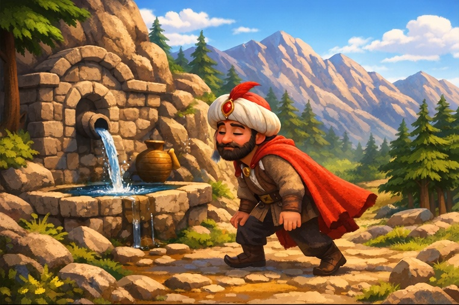
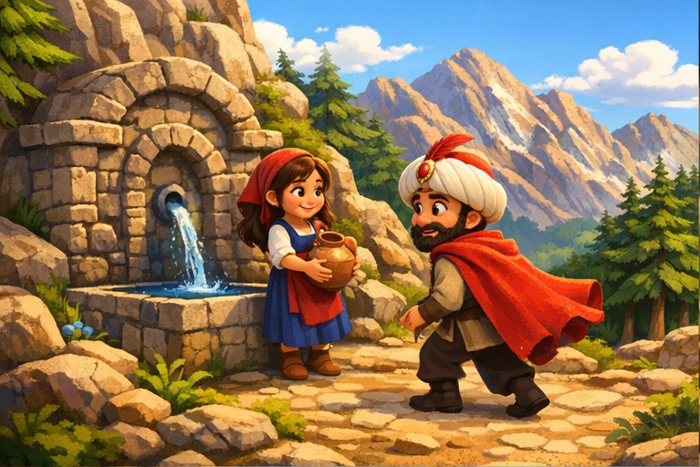
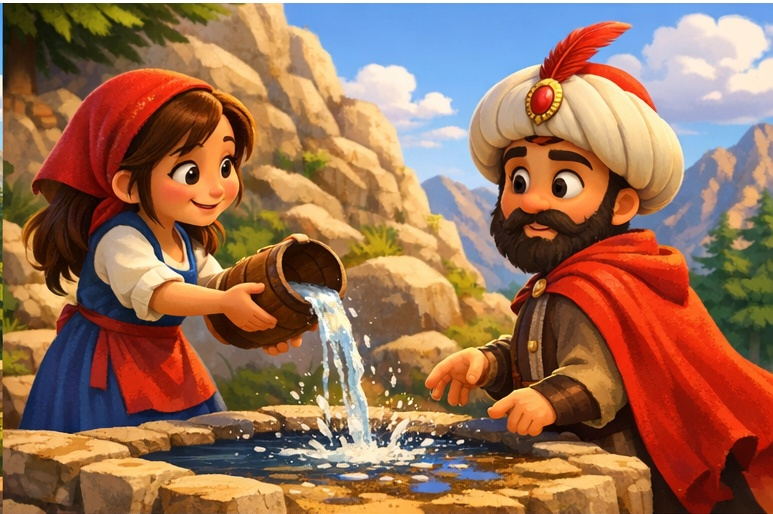
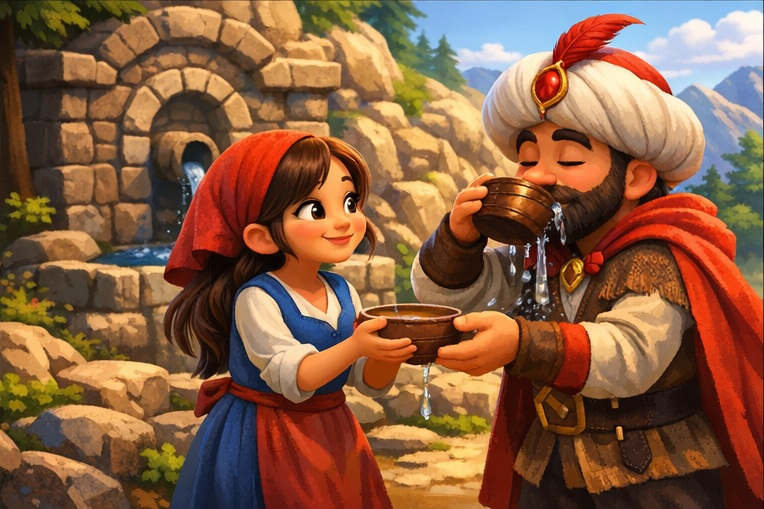
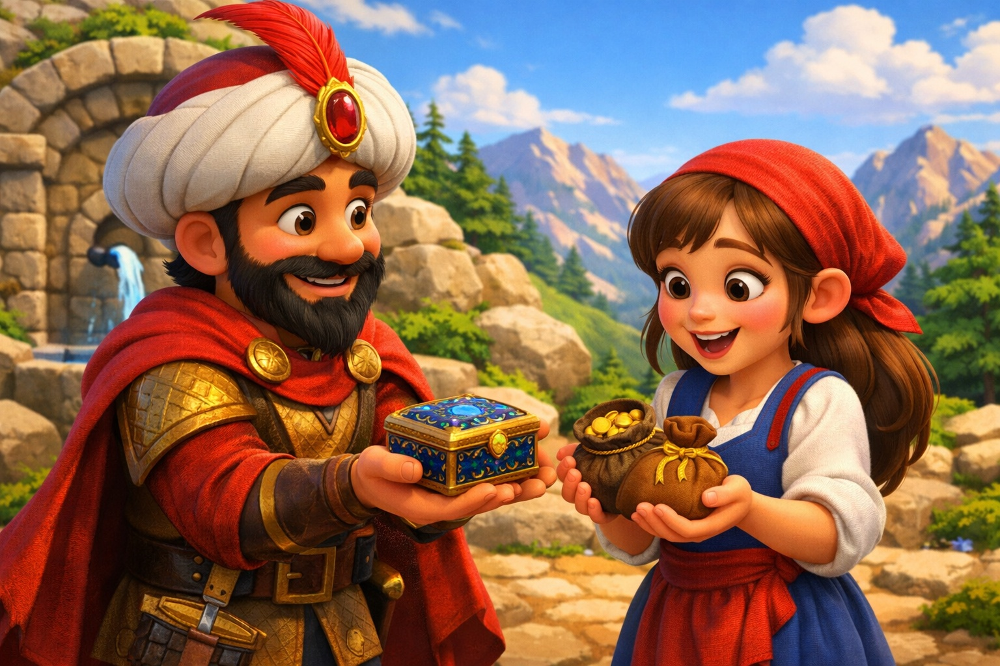
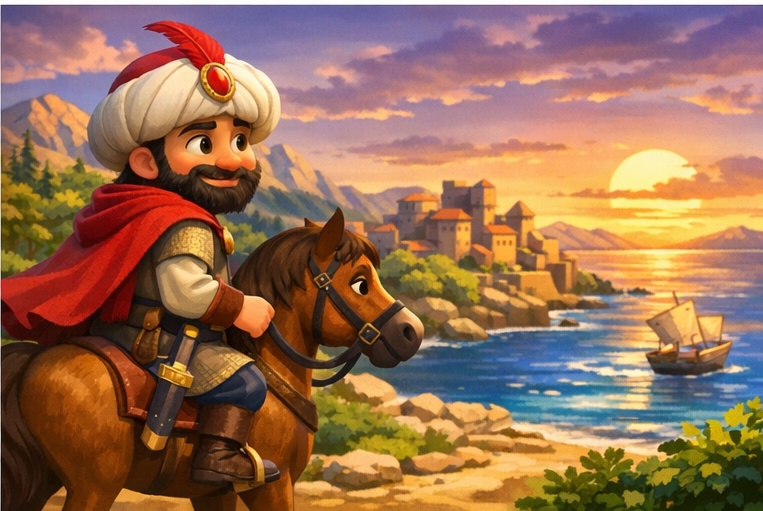

Fatih Sultan Mehmet'in Hikayesi

Türk sultanlarından Fatih Sultan Mehmet, Trabzon’u almak için sefere çıkmış. Zigana dağlarına geldiğinde çok susamış. Çok da yorgunmuş. Dağın tepesine yürüyerek çıktığı için terlemiş. Çeşmeye yaklaşmış.

Güzel bir kız çeşmede su dolduruyormuş. Sultan Mehmet: — Güzel kızım! Bana bir tas su verir misin? demiş.

Kız tasını doldurmuş. Fatih Sultan Mehmet’in yanına gelince suyu yere dökmüş. Kız, tekrar çeşmeye dönmüş. Bu hareketi üç kez tekrarlamış. Dördüncüde doldurduğu suyu Fatih Sultan Mehmet’e uzatmış.

Fatih Sultan Mehmet suyu içmiş. Sonra kıza: —Güzel kızım! Neden üç kez suyu döktün? Neden dördüncüde verdin? demiş.
Kız, Fatih Sultan Mehmet’e şöyle cevap vermiş: —Sultanım! Hava çok sıcak, terlemişsinizdir. Bu su çok soğuktur. Terliyken içip hastalanmayasın diye öyle yaptım.

Fatih Sultan Mehmet, güzel kızın bu düşüncesinden çok hoşlanmış. Ona teşekkür etmiş. Kıza hediyeler vermiş.

Sonra atına binmiş. Trabzon’u fethetmeye gitmiş. O günden sonra da bu çeşmenin adı Sultan suyu olarak anılmış.
— SON —